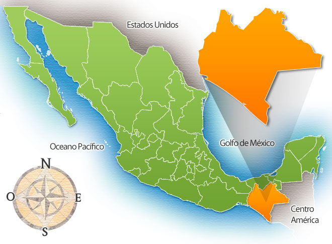

- Su Ubicacion en el Mapa -
Chiapas es un estado ubicado en el sureste de México, que limita con Guatemala y el océano Pacífico. Su capital es Tuxtla Gutiérrez, aunque San Cristóbal de las Casas es uno de sus centros culturales más conocidos. Es una región rica en biodiversidad, paisajes naturales y cultura indígena. Tiene selvas, montañas, ríos y sitios arqueológicos importantes como Palenque, una antigua ciudad maya. Culturalmente, Chiapas destaca por su diversidad étnica: una parte significativa de su población pertenece a diversos grupos indígenas, como los tzotziles, tzeltales y zoques, quienes conservan tradiciones, lenguas y costumbres ancestrales. En cuanto a su economía, Chiapas depende de la agricultura, la ganadería, la producción de café y cada vez más del turismo ecológico y cultural.